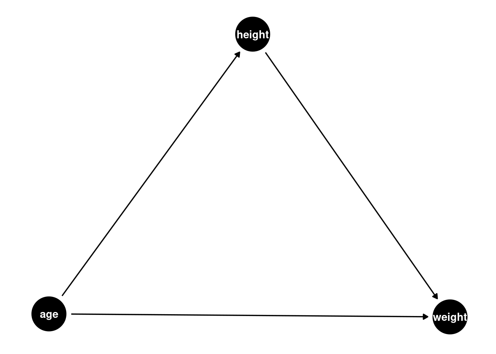
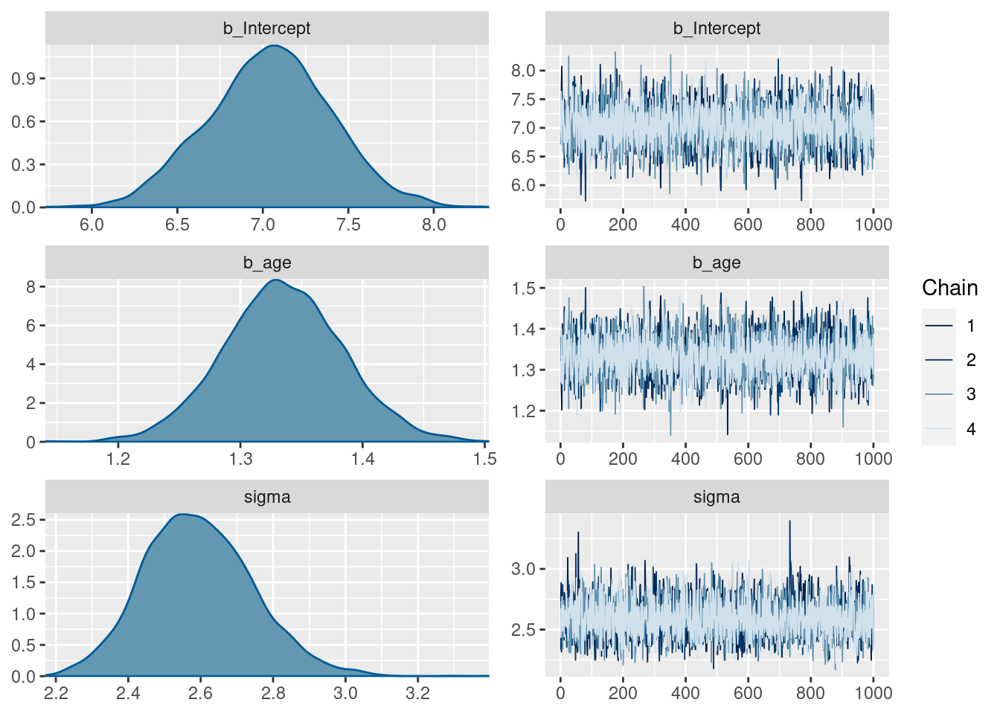
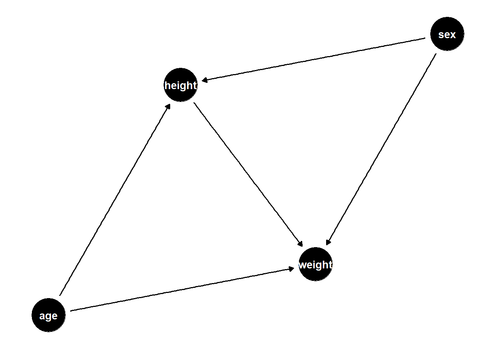
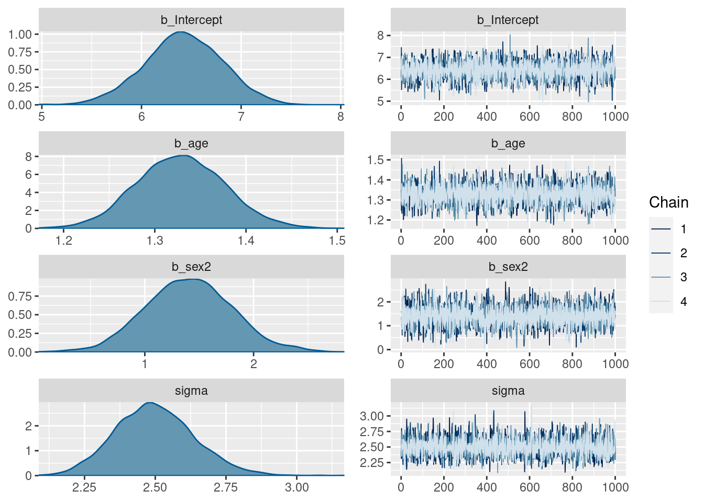
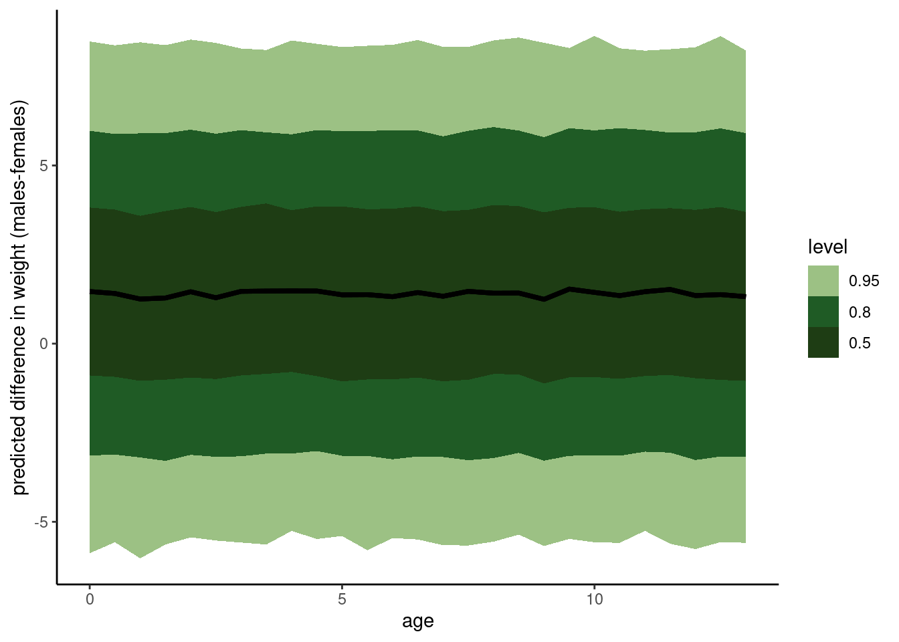

# DAG
dag <- dagify(
weight ~ age + height,
height ~ age,
exposure = 'age',
outcome = 'weight'
)
ggdag(dag) +
theme_dag()
Total causal effect means that we do not account for the effect of height. It is a linear regression of weight ~ age (where age is a proxy for year of growth).
data(Howell1)
d <- Howell1 %>%
filter(age <= 13) %>%
select(c(weight, age))
# get a list of priors present in the model
default_prior <- get_prior(weight ~ age, data = d, family = gaussian())
# get model
tar_load(h02_mAW)
mAW <- h02_mAW
# model formula
mAW$formulaweight ~ age # priors
mAW$prior prior class coef group resp dpar nlpar lb ub source
uniform(0, 10) b user
uniform(0, 10) b age (vectorized)
normal(5, 1) Intercept user
exponential(1) sigma 0 user# check diagnostics
plot(mAW)
# get a summary of posterior distribution
posterior_summary(mAW) Estimate Est.Error Q2.5 Q97.5
b_Intercept 7.045412 0.3704883 6.321620 7.769590
b_age 1.333968 0.0503244 1.234562 1.429823
sigma 2.592469 0.1503199 2.324365 2.911670
lprior -55.444885 2.0344274 -59.543533 -51.468315
lp__ -427.516094 1.2149396 -430.616461 -426.119946Updated DAG:
# DAG
dag <- dagify(
weight ~ height + age + sex,
height ~ age + sex,
exposure = 'age',
outcome = 'weight'
)
ggdag(dag) +
theme_dag()
Model, stratified by sex:
data(Howell1)
d2 <- Howell1 %>%
filter(age <= 13) %>%
mutate(sex = as.factor(case_when(male == 0 ~ 1,
male == 1 ~ 2))) %>%
select(c(weight, age, sex))
# get a list of priors present in the model
default_prior2 <- get_prior(weight ~ age + sex, data = d2, family = gaussian())
# load model
tar_load(h02_mAWS)
mAWS <- h02_mAWS
# model formula
mAWS$formulaweight ~ age + sex # priors
mAWS$prior prior class coef group resp dpar nlpar lb ub source
uniform(0, 10) b user
uniform(0, 10) b age (vectorized)
uniform(0, 10) b sex2 (vectorized)
normal(5, 1) Intercept user
exponential(1) sigma 0 user# check diagnostics
plot(mAWS)
# get a summary of posterior distribution
posterior_summary(mAWS) Estimate Est.Error Q2.5 Q97.5
b_Intercept 6.424833 0.38730794 5.6545303 7.178183
b_age 1.327970 0.04716903 1.2346135 1.421895
b_sex2 1.404762 0.39473554 0.6284143 2.162025
sigma 2.496224 0.14432855 2.2345827 2.796510
lprior -57.976391 1.94753955 -61.6161336 -54.160491
lp__ -424.159815 1.40643917 -427.5797510 -422.434599# get prediction options
pred_vals <- data.frame(age = seq(0, 13, 0.5))
# simulate from model where sex = 1 and sex = 2
post_pred_female <- predicted_draws(mAWS, pred_vals %>% mutate(sex = 1))
post_pred_male <- predicted_draws(mAWS, pred_vals %>% mutate(sex = 2))
# prediction table
post_differences <- data.frame(
predict_sex_female = post_pred_female$.prediction,
predict_sex_male = post_pred_male$.prediction,
age = post_pred_female$age
) %>%
mutate(diff = predict_sex_male - predict_sex_female)
ggplot(post_differences, aes(age, diff)) +
stat_lineribbon() +
scale_fill_manual(values = met.brewer("VanGogh3", 3)) +
labs(
x = 'age',
y = 'predicted difference in weight (males-females)') +
theme_classic()Warning: Using the `size` aesthetic with geom_ribbon was deprecated in ggplot2 3.4.0.
ℹ Please use the `linewidth` aesthetic instead.Warning: Unknown or uninitialised column: `linewidth`.Warning: Using the `size` aesthetic with geom_line was deprecated in ggplot2 3.4.0.
ℹ Please use the `linewidth` aesthetic instead.Warning: Unknown or uninitialised column: `linewidth`.
Unknown or uninitialised column: `linewidth`.